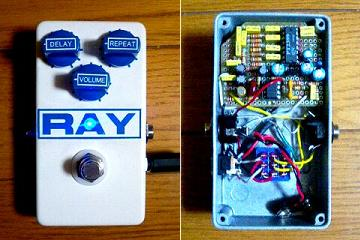

TONEPAD Rebote Delay 2.5
2007年08月31日 カテゴリー：自作エフェクター（アナログ）

TONEPADのRebote Delay 2.5です。以前2.0を作ったんですがあまり接触がよくなかったみたいで、この際バージョンアップもかねて作り直しました。
▽回路図
TONEPAD Rebote 2.5 Delay プロジェクトファイル ダウンロードページ
▽レイアウト
MXRサイズで何とか作れそうな感じです。ただ、コンデンサはボックス型じゃないと厳しいかもしれません。
Delayポットにいく1kΩ→ジャンパー、15kΩ→10kΩで製作しました。さらに、松美庵さんのページによるとクロックノイズの問題があるらしいので、560pF→1nFにしてみました（560pFのマイカコンデンサがデカかったし…）。すると特にノイズは気になりません。音も特にこもっている感じもないです。でもライブでロングディレイを使うならタップテンポは必要だろうから使いにくい気もします。
---以下2021年7月23日追記---
電源投入時にディレイタイムを設定する抵抗値が小さいと動作しなくなるため、Delayポットに繋がる抵抗は2kΩ程度にしておく方がよいようです。